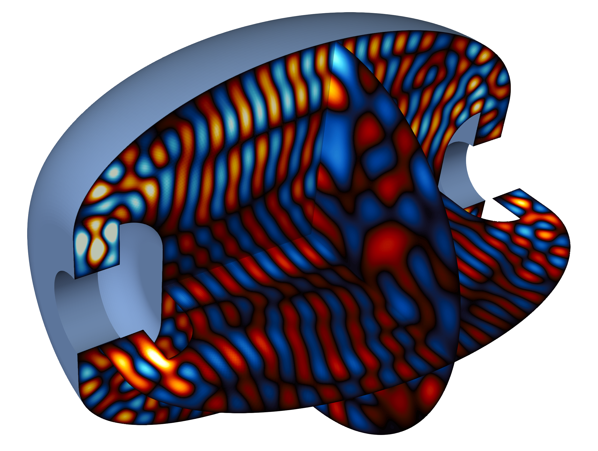
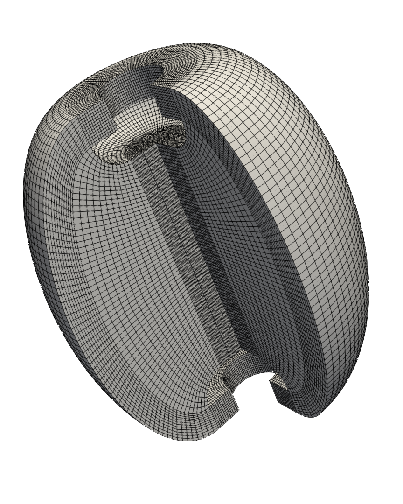
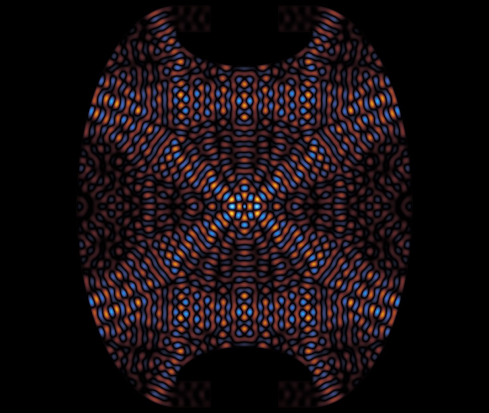
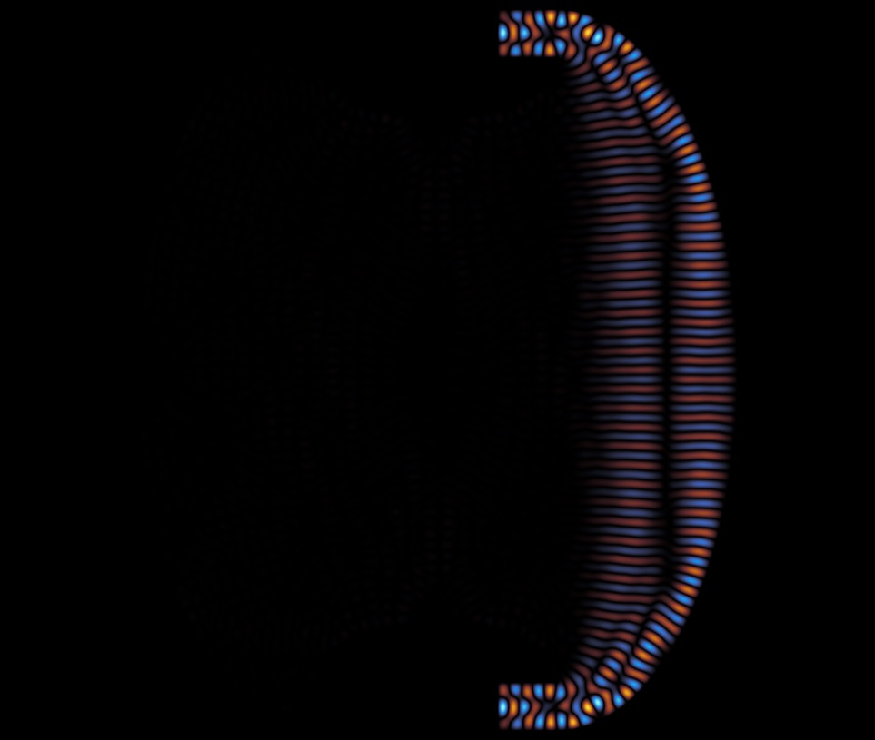
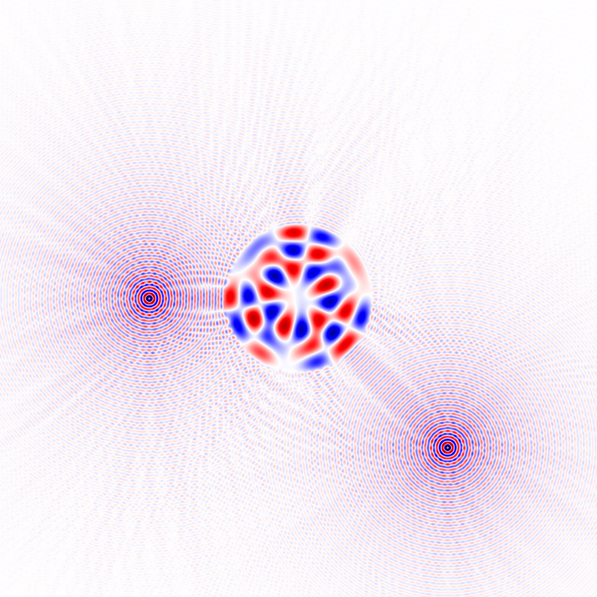
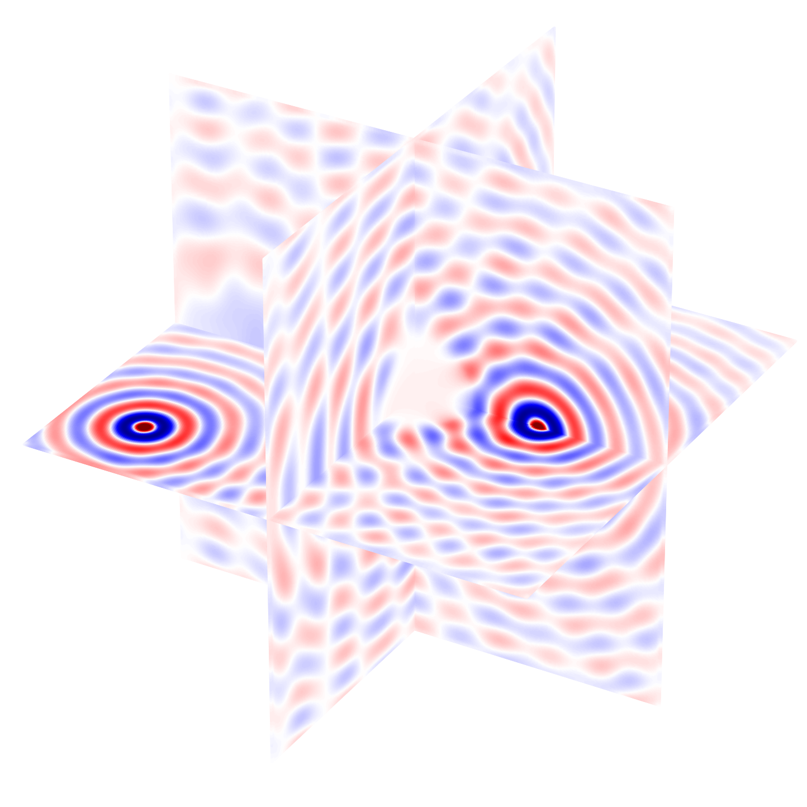
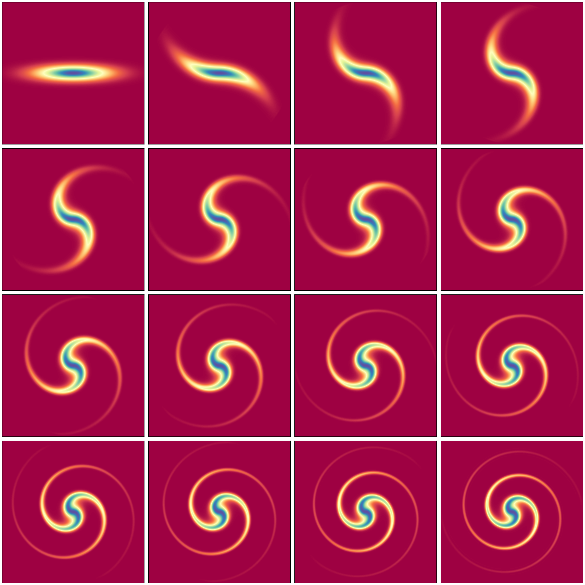
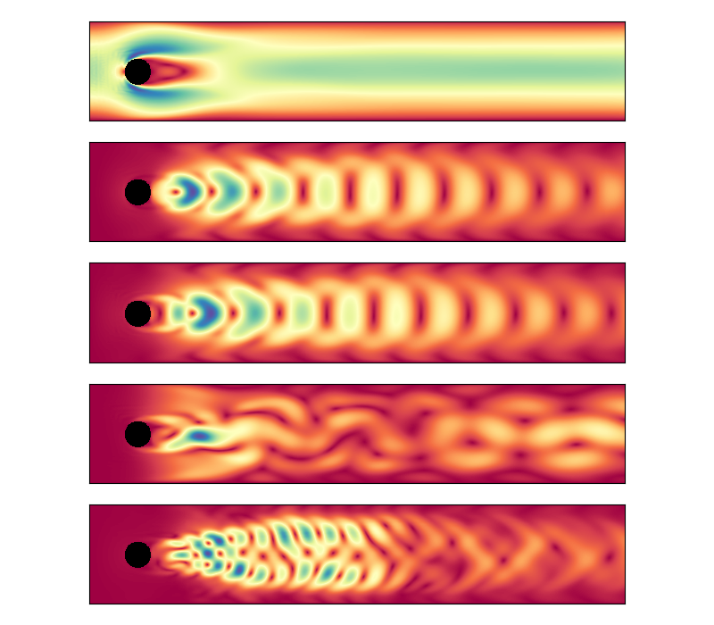
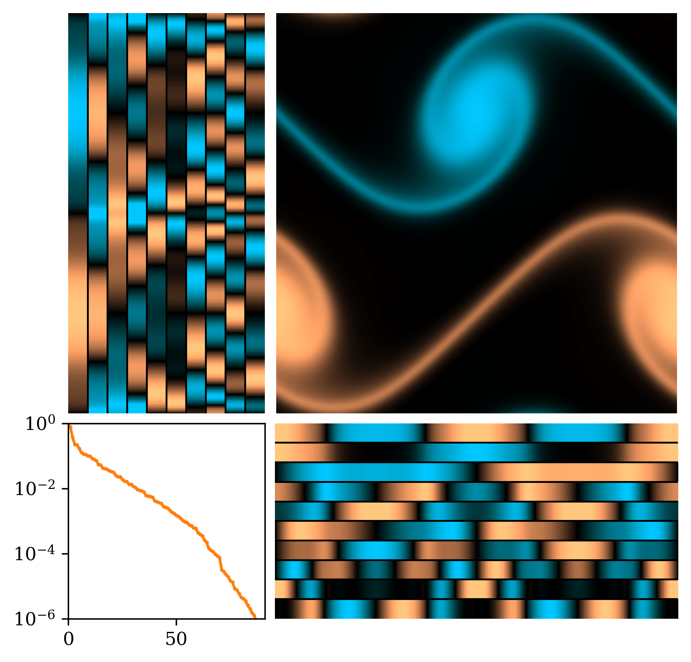
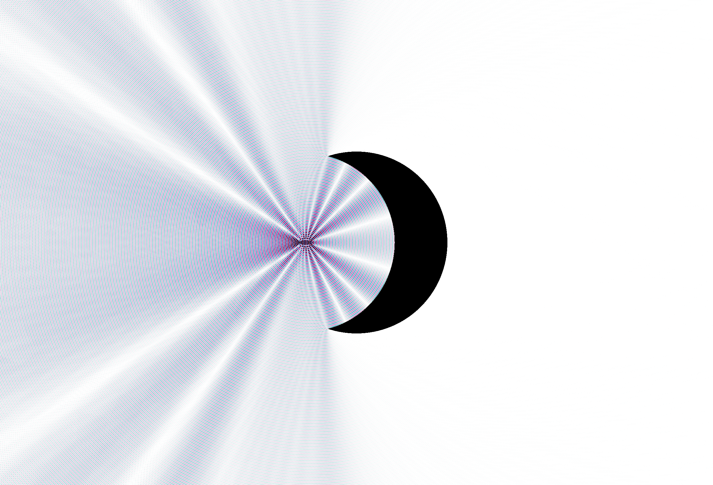

Scientific Visualizations
Gallery

Penrose Unilluminable Room

FEM Mesh — Penrose Room

Source at Center — Full Illumination

Source at Corner — Dark Region

Waveguide Simulation

Scattering — Cylinder (5M DoF)

Scattering — Sphere (4M DoF)

Advection by Vortex

Cylinder Flow — POD Modes

Double Shear Layer — SVD
Corotating Vortices

Scattering — Crescent Moon

Scattering — Crescent Moon

Scattering — Crescent Moon
Oven & Maple